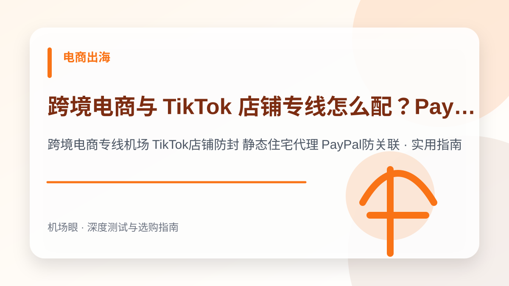

电商出海 · 2026-10-14
跨境电商与 TikTok 店铺专线怎么配？PayPal、Stripe 独立 IP 防封与防关联实战指南
跨境电商与 TikTok 店铺专线怎么配？PayPal、Stripe 独立 IP 防封与防关联实战指南。针对跨境电商专线机场 TikTok店铺防封 静态住宅代理 PayPal防关联提供深度选购与排障实战手册，涵盖架构对比、配置方案、避坑清单与故障排查技巧。
搜索“跨境电商专线机场 TikTok店铺防封 静态住宅代理 PayPal防关联”时，真正需要解决的不是单纯寻找一个服务名称，而是建立一套从网络底层逻辑、成本模型、安全风控到实战配置的完整决策体系。本文面向亚马逊卖家、TikTok Shop 运营者、独立站卖家（Shopify）、PayPal/Stripe 跨境收付款团队，为你深度拆解核心技术原理与实测避坑指南。
先给结论：选购与排障的核心要点
跨境店铺与跨境金融风控的核心是 IP 纯净度与浏览器环境唯一性；千万不可使用千人共享的普通中转机场运营高价值店铺；必须建立‘静态原生住宅 ISP + 指纹浏览器硬件环境伪装 + WebRTC/DNS 绝对隔离’的专业防封关联体系。在实际网络环境中，任何节点的表现都会受到本地运营商网络、骨干网互联质量、客户端协议栈实现以及目标平台风控规则的综合制约。因此，不要盲从网上的单一测速截图，必须结合自身使用场景进行针对性验证。
为什么这个话题在 2026 年成为热搜刚需
2026 年海外电商与金融平台风控引擎（如 Amazon Risk System、PayPal Fraud Engine、TikTok Device Integrity）已经全面引入机器学习与设备信誉图谱。普通机场虽然测速极快，但同一个节点可能被上百名黑灰产用户共用，IP 早已被 IPQS、MaxMind 等风控数据库标记为‘机房代理（Data Center Proxy）’，甚至挂上欺诈高危标签。一旦用这种 IP 登录亚马逊后台或 TikTok 店铺，极易遭遇连坐封店。跨境卖家必须分清‘翻墙看剧的机场’与‘跨境生产力的专线’的本质边界。
典型应用场景与决策依据
例如一家跨境出海团队运营 5 个美区 TikTok Shop 和 2 个独立站 PayPal 账户。若员工使用普通机场翻墙登录，节点每隔几天切换一次机房，且出口属于 DigitalOcean 托管机房，PayPal 判定为被盗号直接永久冻结资金 180 天。改用独享静态原生住宅 ISP 节点搭配 AdsPower 指纹浏览器，每个店铺独占一条美国家宽线路，连续 12 个月零风控平稳运营。
普通机场节点 vs 商业机房 IP vs 静态原生住宅 ISP 专线
| 对比维度 | 普通共享机场节点 | 商业机房原生 VPS (机房IP) | 静态原生住宅 ISP 专线 |
|---|---|---|---|
| ASN 属性 | Hosting / Datacenter (机房) | Hosting / Cloud (数据中心) | ISP / Residential (真实家庭宽带) |
| IP 独享度 | 数百上千人共享同一出口 | 单人独享 (但机房段易被标记) | 一人一店一号绝对独占 |
| IP 纯净度与欺诈分 | Fraud Score > 75 (高危黑名单) | Fraud Score 40 ~ 70 (中风险) | Fraud Score < 15 (极度安全) |
| TikTok 0 播放率 | 高达 80% 以上被系统限流 | 约 40% ~ 60% 偶发限流 | 低于 5% (自然推流推荐率高) |
| 适用场景 | 日常查资料、追剧、写代码 | 海外外贸建站、API 数据拉取 | 亚马逊、TikTok Shop、PayPal 必备 |
跨境电商防封防关联“四重隔离”黄金架构
想要保障跨境店铺永续稳定运营，必须从网络链路到终端环境建立全链路闭环防护：
- 环境层：指纹浏览器（AdsPower / Hubstudio / Multilogin）深度隔离：
千万不要使用同一台电脑的 Chrome 多标签页登录不同店铺！必须使用指纹浏览器对每一个账号生成独立的虚拟硬件环境（伪装不同 Canvas 哈希、AudioContext 指纹、显卡 WebGL 驱动与系统字体列表），彻底斩断浏览器端设备指纹识别。 - 网络层：绑定独享静态住宅（Static Residential ISP）代理：
每个指纹环境绑定固定的 HTTP / SOCKS5 住宅代理，优选 AT&T、Verizon、Comcast 等美国主流本地宽带 ISP 出口，确保每次启动浏览器打开 Whoer / IPinfo 检查时，ASN 均显示为真实宽带，欺诈评分（Scam/Fraud Score）低于 10 分。 - 地理与时区 100% 对齐：
系统时区、语言环境与 IP 地理位置必须绝对一致。如果 IP 在美国洛杉矶（GMT-7），而浏览器时区却泄露为中国标准时间（GMT+8），风控系统会判定为高危地理欺诈。指纹浏览器中必须开启“基于 IP 自动匹配时区与语言”。 - WebRTC 泄漏与 DNS 劫持防护：
很多用户虽然挂了代理，但浏览器 WebRTC 协议直接把局域网真实公网 IP 广播出去。必须在指纹浏览器配置中将 WebRTC 设置为 「替换 (Replace)」 或 「禁用 (Disable)」，并指定加密远程 DNS 解析。
选购与实测需要关注的四个核心指标
- 必须选用 ASN 标记为真实本地运营商（如 Comcast、Charter、AT&T）的静态原生 ISP 住宅节点
- 严禁在同一个代理 IP 下登录多个跨境平台同主体或竞争店铺
- 登录前使用 IPQS (ipqualityscore.com) 检测，欺诈分（Fraud Score）必须低于 20 分
- 必须搭配专业指纹浏览器严格隔离 WebRTC、时区、系统语言与屏幕分辨率
推荐的标准化实操流程
- 准备专业指纹浏览器环境并创建独立的浏览器配置文件
- 采购经过质量核验的独享静态住宅代理，绑定至该浏览器环境并测试连通性
- 使用 whoer.net 和 browserleaks.com 验证模拟伪装度达到 100%
- 首次登录目标店铺平台先进行常规浏览养号 3~5 天，稳定后再进行大额资金操作
最常见的四个认知误区与避坑建议
- 用普通中转机场的几百人共享节点直接登录亚马逊主账号或 PayPal 提现
- 为了省钱在同一个浏览器配置文件内频繁切换登录多个不同店铺
- 忽视 WebRTC 泄漏，导致国内真实电信/联通 IP 直接暴露给平台风控引擎
- 在账号触发验证时随意在手机蜂窝网络和电脑代理之间反复横跳切换
常见问题深度解答 (FAQ)
动态住宅 IP（按流量扣费）和静态住宅 IP（按月固定）哪个更适合做跨境电商？
静态住宅 IP 远远优于动态 IP！动态 IP 每次断开重连就会更换一个新地址，对于数据爬取很合适；但对亚马逊、Shopify、PayPal 来说，频繁异地登录会被判定为‘被盗号’或异地欺诈。店铺与金融支付必须使用‘静态固定 IP’。
做 TikTok 海外短视频带货，为什么发出去的视频总是 0 播放？
0 播放通常是由两个原因造成：一是手机硬件残留（拔卡不彻底、GPS 定位未伪装、系统语言不是英文）；二是代理 IP 不纯净，使用了被 TikTok 封锁的机房 IP。改用干净的原生美区住宅 IP，并在手机抹机后重新搭建环境，即可恢复正常推流。
使用指纹浏览器搭配专线代理，能百分之百保证店铺不被封吗？
防关联网络技术只能解决‘网络与环境维度的封店风险’（解决不被关联连坐）。平台封店还可能涉及产品侵权、刷单、买家欺诈投诉、发货超时等业务合规原因。做好环境隔离是店铺安全运营的基础红线。
总结与下一步建议
面对日益复杂的网络监管环境与海外平台风控策略，跨境电商专线机场 TikTok店铺防封 静态住宅代理 PayPal防关联的关键在于回归需求本质——不要试图用单一廉价方案解决所有问题。合理建立“主力专线 + 备用容灾 + 协议分流”的弹性架构，才能在多变的环境中获得长期稳定体验。